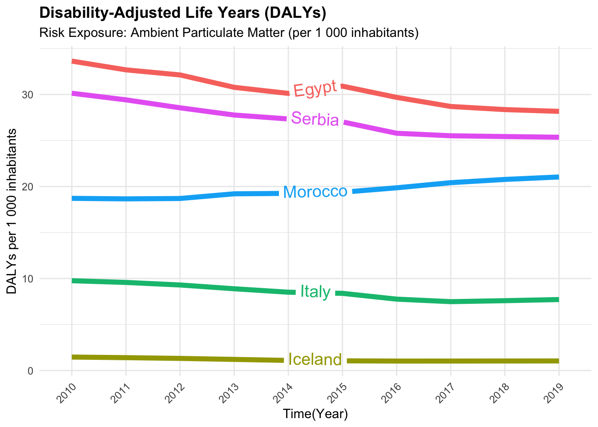
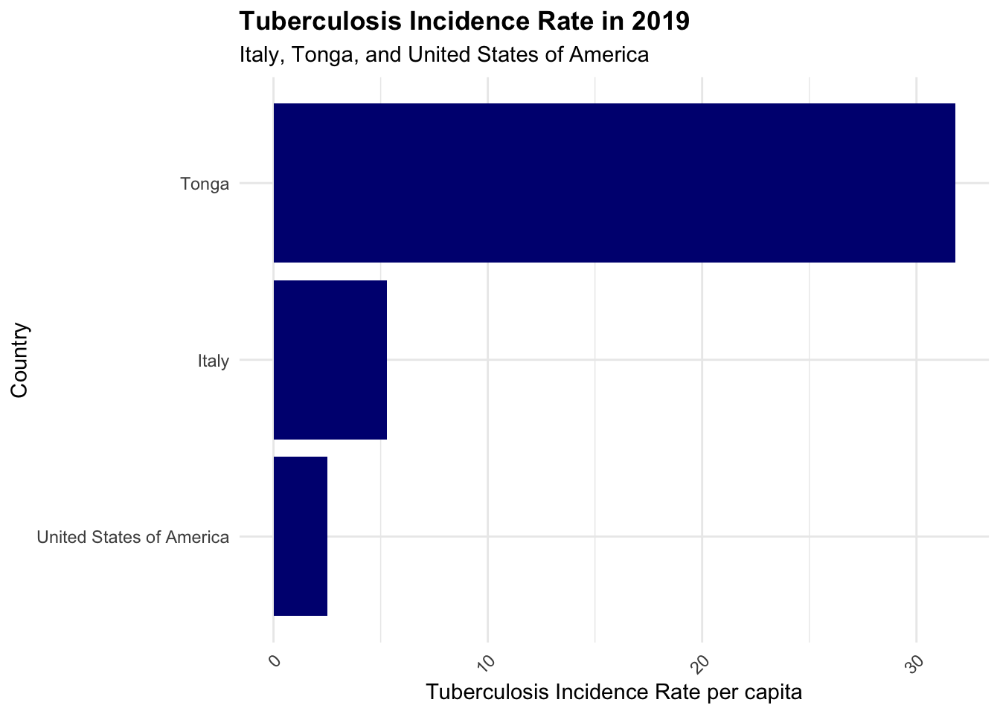
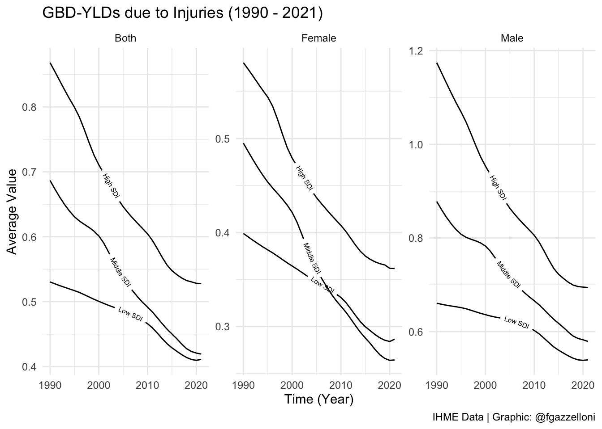
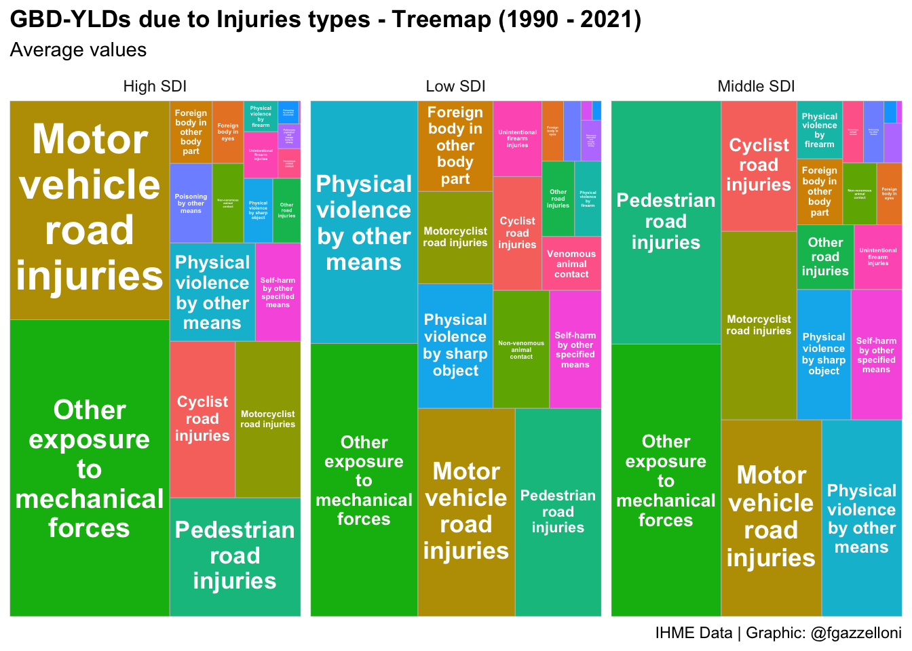
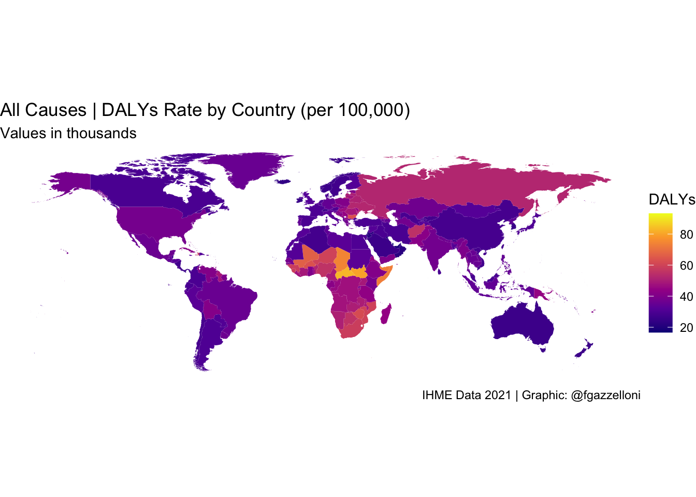

install.packages("rsdmx")
library(rsdmx)17 Summary: The State of Health
Learning Objectives
- How health metrics vary across different countries
- Gain insights from the Global Burden of Disease (GBD) study on health metrics at the country level
- Evaluate the implications of health metrics for global public health policy and interventions
In the previous sections, we explored various aspects of health metrics, including tailored case studies, data sources, modelling, and visualisation techniques. We discussed key health metrics such as mortality rates, life expectancy, Disability-Adjusted Life Years (DALYs), Years of Life Lost (YLLs), and Years Lived with Disability (YLDs). We also examined the role of risk factors, disease burdens, and health outcomes in shaping population health profiles.
In this final chapter, we will focus on visualising health metrics across countries to understand the state of health globally. We will explore the implications of cross-country comparisons of health metrics for public health policy and interventions. We will use data from the Global Burden of Disease (GBD) study and the OECD’s Health at a Glance report to compare health indicators, disease burdens, and risk factors across different countries. By analysing health metrics at the country level, we can gain insights into public health priorities, identify areas for improvement, and inform global public health policy.
17.1 Data Sources for Health Metrics Comparison
Data availability is crucial for comparing health metrics across countries and regions. The OECD’s Health at a Glance report and the Global Burden of Disease (GBD) study offer comprehensive data on health indicators, disease burdens, and risk factors, enabling cross-country comparisons and insights into public health priorities.
17.1.1 Example of OECD Health at a Glance Data
The OECD’s Health at a Glance report offers a comparative overview of health indicators among member countries. The report examines metrics such as life expectancy, health expenditures, and major health trends. It also provides accessible insights into public health priorities and performance indicators, facilitating comparisons and helping to identify areas for improvement (www.oecd-ilibrary.org).
In this example, we will download data from the OECD’s Health at a Glance report website (https://data-explorer.oecd.org/) to compare Disability-adjusted life years (DALYs) due to Ambient Particulate Matter as a risk exposure per 1 000 inhabitants (accessed Nov 2024).
We can use the url for DALYs due to Ambient Particulate Matter found by searching for the keyword DALYs in the search box of the OECD report website.
The url is broken down into the following components:
- sdmx.oecd.org/public/rest/data/
- OECD.ENV.EPI,DSD_EXP_MORSC@DF_EXP_MORSC,1.0/
- .A.DALY.10P3HB.PM_2_5_OUT._T._T?startPeriod=2010
Data are available to download in the SDMX format, which is a standard for exchanging statistical data. We will use the {rsdmx} package to download the data and convert it to a data frame for analysis.
library(tidyverse)# Read the data
sdmx_data <- readSDMX(url)
# Convert SDMX data to a data frame
df <- as.data.frame(sdmx_data)A glimpse of the data shows the structure of the data frame, including the column names and data types.
df %>%
janitor::clean_names() %>%
head(3) %>%
glimpse()
#> Rows: 3
#> Columns: 14
#> $ ref_area <chr> "PRI", "PRI", "PRI"
#> $ freq <chr> "A", "A", "A"
#> $ measure <chr> "DALY", "DALY", "DALY"
#> $ unit_measure <chr> "10P3HB", "10P3HB", "10P3HB"
#> $ risk <chr> "PM_2_5_OUT", "PM_2_5_OUT", "PM_2_5_OUT"
#> $ age <chr> "_T", "_T", "_T"
#> $ sex <chr> "_T", "_T", "_T"
#> $ unit_mult <chr> "0", "0", "0"
#> $ decimals <chr> "2", "2", "2"
#> $ conversion_type <chr> "_Z", "_Z", "_Z"
#> $ price_base <chr> "_Z", "_Z", "_Z"
#> $ obs_time <chr> "2017", "2018", "2019"
#> $ obs_value <dbl> 3.199, 3.417, 3.667
#> $ obs_status <chr> "A", "A", "A"Observation time spans from 2010 to 2019 for 212 countries. We filter the data to include only the relevant columns and arrange it by observation time to get a better understanding of the data.
dalys_pm25 <- df %>%
janitor::clean_names() %>%
select(ref_area, measure, risk, obs_time, obs_value) %>%
arrange(obs_time)
dalys_pm25 %>%
head()
#> ref_area measure risk obs_time obs_value
#> 1 PRI DALY PM_2_5_OUT 2010 2.474
#> 2 DZA DALY PM_2_5_OUT 2010 14.680
#> 3 CHL DALY PM_2_5_OUT 2010 6.758
#> 4 OECDA DALY PM_2_5_OUT 2010 5.516
#> 5 NPL DALY PM_2_5_OUT 2010 14.249
#> 6 MWI DALY PM_2_5_OUT 2010 4.211Then, to make the data more interpretable, we convert the ref_area column from ISO3 codes to country names using the {countrycode} package. Data provides information for various regions and groups, which we exclude from the analysis.
library(countrycode)
dalys_pm25 <- dalys_pm25 %>%
filter(!ref_area %in% c("A9", "ASEAN", "EA19", "EU27",
"EU28", "F98", "G20", "OECD",
"OECDA", "OECDE", "OECDSO", "W")) %>%
mutate(ref_area = countrycode::countrycode(ref_area,
origin = "iso3c",
destination = "country.name"))Finally, to visualise the data we use a line plot to compare Disability-adjusted life years (DALYs) due to Ambient Particulate Matter as a risk exposure per 1 000 inhabitants for Egypt, Serbia, Morocco, Italy, and Iceland. These countries were selected based on their geographical location and varying levels of DALYs due to Ambient Particulate Matter.

We can conclude that the Disability-adjusted life years (DALYs) due to Ambient Particulate Matter varied across countries from 2010 to 2019. This variation may be due to differences in environmental policies, air quality, and public health interventions aimed at reducing exposure to particulate matter. In particular, countries like Egypt and Serbia experienced higher DALYs due to Ambient Particulate Matter compared to countries like Iceland and Italy.
In general, the data shows that regions with high air pollution, such as parts of East Asia, see increased DALYs from respiratory conditions. This is due to the high levels of particulate matter in the air, which can lead to respiratory diseases like asthma and chronic obstructive pulmonary disease (COPD). Countries with stringent air quality regulations, such as those in Western Europe, tend to have lower DALYs from air pollution-related conditions.
17.1.2 Example of GBD Data Cross-Country Comparisons
The Global Burden of Disease GBD study by the Institute for Health Metrics and Evaluation (IHME) provides comprehensive data on various health metrics covering a vast array of diseases, injuries, and risk factors across 204 countries. To access the GBD data (<www.healthdata.org>), we can use the Sustainable Development Goals (SDG) API provided by the IHME. The API allows users to access GBD data for specific indicators, locations, and years, enabling cross-country comparisons. In Section A.3 is provided a detailed guide on how to access and use the SDG API.
In this example, we will compare the Tuberculosis Incidence Rate in 2019 for selected countries using the Sustainable Development Goals (SDG) API data. We will use the {hmsidwR} package to download the data and visualise the results using a bar plot.
# Install the hmsidwR package
install.packages("hmsidwR")
# or the development version
devtools::install_github("fgazzelloni/hmsidwR")# Load the libraries
library(hmsidwR)We download the data using the gbd_get_data function from the {hmsidwR} package. The function requires the URL, API key, endpoint, indicator ID, location ID, and year as input parameters, as shown below:
data_1001 <- hmsidwR::gbd_get_data(
url = "https://api.healthdata.org/sdg/v1",
key = "YOUR-KEY",
endpoint = "GetResultsByIndicator",
indicator_id = "1001",
location_id = c("29","86","102"),
year = "2019"
)Filter the data by both gender and subset to include only the relevant columns:
data_1001 %>%
filter(sex_label=="Both sexes") %>%
select(location_name, indicator_short, mean_estimate)
#> location_name indicator_short mean_estimate
#> 1 Tonga TB Incid 31.80181440147271
#> 2 Italy TB Incid 5.277028727101566
#> 3 United States of America TB Incid 2.52029721501685To compare the cross-countries results to identify disparities in Tuberculosis Incidence Rate in 2019 for selected countries, we can use a bar plot.

Tuberculosis can still be a significant concern, even in smaller island nations, due to factors like limited healthcare infrastructure, high prevalence of co-morbidities, and socio-economic conditions. Tonga, a country located in the South Pacific, east of Australia, and north of New Zealand, part of the region known as Oceania, is made up of 170 islands, where four-fifths of them are uninhabited. The country faces challenges in managing infectious diseases like tuberculosis due to its geographical location and limited resources. The comparison of Tuberculosis Incidence Rate in 2019 for Italy, Tonga, and the United States of America highlights the disparities in disease burden and health outcomes across countries.
17.2 Key Determinants of Health Metrics Variation
Health metrics can vary significantly across countries due to a combination of factors that influence population health outcomes. Some of the key determinants of health metrics variation include:
- Healthcare Infrastructure and Access
- Socioeconomic Status
- Environmental Factors
- Lifestyle and Behavioral Factors
- Public Health Policies and Interventions
- Cultural and Social Norms
These determinants influence health outcomes and disease burdens in different populations, shaping the overall health profile of a country. The availability and quality of healthcare services, income level, employment status, and education, are strongly linked to health outcomes. Geographic factors, such as climate, also influence disease patterns; tropical regions may have higher rates of vector-borne diseases like malaria and for this reason have higher DALYs due to these diseases. Countries that prioritize preventive health measures often see long-term benefits in population health metrics.
17.3 Example: Years Lived with Disability (YLDs) due to Injuries
The Global Burden of Disease (GBD) study provides detailed data on a wide range of health metrics, including Years Lived with Disability (YLDs) due to injuries. Considered non fatal outcomes, YLDs measure the impact of injuries on population health by quantifying the years lived with a disability caused by an injury. By comparing YLDs due to injuries across countries with different Sustainable Development Index (SDI) levels, we can identify disparities in injury-related health outcomes and inform public health interventions to reduce the burden of injuries.
In this example we will use the GBD data to compare the Years Lived with Disability (YLDs) due to Injuries for high, middle, and low Sustainable Development Index (SDI) countries from 1990 to 2021. Data are available on the GBD website at www.healthdata.org1, and we will use the {ggplot2} package to create a line plot visualising the YLDs due to Injuries by country and SDI level.
ylds_injuries %>% head(3) %>% glimpse()
#> Rows: 3
#> Columns: 4
#> $ year <int> 1990, 1990, 1990
#> $ sex_name <chr> "Both", "Both", "Both"
#> $ location_name <chr> "High SDI", "High-middle SDI", "Low SDI"
#> $ avg <dbl> 0.8681205, 0.9437509, 0.5304269ylds_injuries %>%
filter(!str_detect(location_name, "-middle")) %>%
ggplot(aes(x = year, y = avg,
group = location_name)) +
geomtextpath::geom_textline(aes(label = location_name),
hjust = 0.5,
vjust = 0.5,
size = 2) +
facet_wrap(~ sex_name, scales = "free") +
labs(title = "GBD-YLDs due to Injuries (1990 - 2021)",
caption = "IHME Data | Graphic: @fgazzelloni",
x = "Time (Year)", y = "Average Value") +
theme_minimal()
We can conclude that the Years Lived with Disability (YLDs) due to Injuries varied across countries with different Sustainable Development Index (SDI) levels from 1990 to 2021. High SDI countries generally had lower YLDs due to Injuries compared to middle and low SDI countries. This variation may be due to differences in healthcare infrastructure, access to preventive services, and public health interventions aimed at reducing injuries and their impact on population health.
Additionally, the data reveals a consistent decline in YLD rates due to injuries across all SDI levels (High, Middle, and Low) from 1990 to 2021. This trend reflects advancements in injury prevention, improved healthcare access, and enhanced living conditions, which have collectively reduced the disability burden of injuries among females. However, there is a notable crossover in injury-related YLD rates for females between middle and low SDI countries over time. This shift suggests changing dynamics in injury risk and healthcare access, with middle SDI countries achieving greater reductions in disability from injuries, while low SDI countries experience a rising burden.
17.4 Example: Injuries Cross-Country Variation by Type
In this example, we will use the GBD data to compare the types of injuries contributing to the burden of disease in high, middle, and low SDI countries from 1990 to 20212. For example, we can compare the average number of injuries by type (e.g., road injuries, falls, self-harm) in high, middle, and low SDI countries. This comparison can help identify the most common types of injuries and inform targeted public health interventions to reduce the burden of injuries in different populations.
injuries_types %>% head(2) %>% glimpse()
#> Rows: 2
#> Columns: 3
#> $ location_name <chr> "High SDI", "High SDI"
#> $ cause_name <chr> "Cyclist road injuries", "Foreign body in eyes"
#> $ avg <dbl> 1.2603803, 0.2409338To compare the types of injuries contributing to the burden of disease in different countries, we can use a treemap visualisation. A treemap is a hierarchical chart that displays data in nested rectangles, with each rectangle representing a different category or subcategory. In this example, we will create a treemap to visualise the average number of injuries by type in high, middle, and low SDI countries.
library(treemapify)
# ?geom_treemapinjuries_types %>%
filter(!str_detect(location_name, "-middle")) %>%
ggplot(aes(area = avg,
label = cause_name,
fill = cause_name)) +
geom_treemap(show.legend = F) +
geom_treemap_text(fontface = "bold",
reflow = T,
min.size = 1,
color = "white",
place = "centre",
grow = TRUE) +
facet_wrap(~location_name, scales = "free") +
labs(title = "GBD-YLDs due to Injuries types - Treemap (1990 - 2021)",
subtitle = "Average values",
caption = "IHME Data | Graphic: @fgazzelloni")
We can conclude that the types of injuries contributing to the burden of disease varied across high, middle, and low SDI countries from 1990 to 2021. Road injuries, falls, and self-harm were common types of injuries in all countries, with variations in the average number of injuries by type. This information can help inform targeted public health interventions to reduce the burden of injuries and improve population health outcomes.
17.5 Example: All Causes DALYs Rate by Country
In this example, we will visualise the Disability Adjusted Life Years (DALYs) Rate by Country for all causes using the GBD data. We will use data from the {hmsidwR} package, spatialdalys2021, to create a choropleth map showing the DALYs rate per 100,000 population for each country. The map will provide a visual representation of the burden of disease across different countries, highlighting disparities in health outcomes and disease burdens.
hmsidwR::spatialdalys2021 %>%
ggplot(mapping=aes(x=long, y=lat,
fill = value, map_id = location)) +
geom_polygon(aes(group=group)) +
# change the values of the fill scale
scale_fill_viridis_c(option = "plasma",
labels = scales::number_format(scale = 1e-3),
name = "DALYs") +
coord_sf() +
labs(title = "All Causes | DALYs Rate by Country (per 100,000)",
subtitle = "Values in thousands",
caption = "IHME Data 2021 | Graphic: @fgazzelloni") +
theme_void()
We can conclude that the Disability Adjusted Life Years (DALYs) Rate varied across countries, with some countries experiencing higher DALYs rates compared to others. This variation reflects differences in disease burdens, health outcomes, and the impact of different health conditions on population health. The choropleth map provides a visual representation of the burden of disease, highlighting disparities in health outcomes and informing public health interventions to improve population health.
In general, what emerges from the GBD 2021 data is that low-income countries, particularly in sub-Saharan Africa, often exhibit the highest DALYs per capita. This is primarily due to a heavy burden of infectious diseases (e.g., malaria, HIV/AIDS, tuberculosis), maternal and neonatal health issues, and malnutrition-related conditions. Countries like the Central African Republic, South Sudan, and Lesotho consistently report some of the highest DALYs per capita.
On the other hand, high-income countries, particularly in Western Europe, North America, and parts of East Asia (e.g., Japan, Singapore), tend to have the lowest DALYs per capita. These countries benefit from well-developed healthcare systems, lower prevalence of infectious diseases, and greater control over non-communicable diseases through early detection and lifestyle interventions. Countries like Iceland, Switzerland, and Singapore consistently report some of the lowest DALYs per capita.
Additionally, lifestyle-related factors like smoking and dietary habits play a significant role in the burden of cardiovascular diseases and cancers globally.
17.6 Implications for Global Public Health Policy
In summary, comparing health metrics across countries is essential for understanding the state of health globally. Resources like the GBD study and the OECD’s Health at a Glance report provide valuable insights into health metrics, enabling comparisons and identifying areas for improvement. By analysing health metrics across countries, we can gain insights into public health priorities, disease burdens, and health outcomes, which are crucial for informing global public health policy and interventions.
Analysing health metrics at a global level reveals key patterns in disease prevalence, mortality rates, and risk factors, offering insights into how socio-economic, environmental, and policy variables influence health outcomes. Such comparative analyses are critical for setting international health priorities and targeting interventions in regions with the greatest need.
Regional studies play an equally significant role in contextualizing global insights. For instance, The State of Health in the European Union in 2019 (Santos et al., 2019)3 highlights the importance of tailoring health policies to regional contexts. By focusing on EU countries, the study identifies unique challenges and opportunities, providing a blueprint for targeted interventions and efficient resource allocation. These findings underscore that while global frameworks are valuable, effective public health strategies often require adaptation to local circumstances, cultures, and health systems. Investing in health metric comparisons strengthens global collaboration by fostering data sharing, capacity building, and the exchange of best practices among nations.
For reproducibility a copy of the “injuries” data are stored on the GitHub Repository of this book (https://github.com/Fgazzelloni/hmsidR) in the data/inst/extdata folder.↩︎
For reproducibility a copy of the “injuries” data are stored on the GitHub Repository of this book (https://github.com/Fgazzelloni/hmsidR) in the data/inst/extdata folder.↩︎
J Vasco Santos et al., “The State of Health in the European Union in 2019,” European Journal of Public Health 31, no. Supplement_3 (October 1, 2021): ckab164.043, doi:10.1093/eurpub/ckab164.043.↩︎